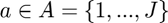
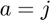
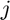
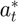
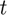
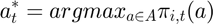
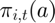

Value function maximization function
- Filename: vmax.m
- Authors: Matt Reimer
- Created: 07/08/17
- Purpose: Function that returns the fishery tha maximizes the value function from the Bellman equation.
Contents
Description
The function vamx returns the the fishery tha maximizes the value function from the Bellman equation. Let  denote the discrete fishery choice variable, where  indicates that fishery  is chosen. Then the optimal fishery  in period  satisfies:

where  is defined and computed in the function func.
function [out1,out2] = vmax(t,i,m,EC,w,sig)
Input arguments:
- t = time period;
- i = vessel;
- m = a structure of parameter values;
- EC = an array of expected catch used in reward function and constraints;
- w = expected quota lease prices.
- sig = random variable representing "signalling error".
Output Arguments:
- out1 = the maximum value of the value function.
- out2 = the argument that maximizes the value function
Parameters
A = m.actions; % Set of all possible actions da = size(A,1); % Number of possible actions
Calculate value for each fishery
f = zeros(1,da); % This period's reward for j=1:da % Loop over all possible actions f(:,j) = func('f',j,t,i,[],sig,m,EC,w); % Evaluate the reward end
Find fishery with maximum value
[out2,out1] = max(f,[],2);
end